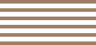
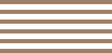

Enjoyable place for all the family
Our relaxed surroundings make dining with us a great experience for everyone. We can even arrange a tour of the farm before your meal.
Our relaxed surroundings make dining with us a great experience for everyone. We can even arrange a tour of the farm before your meal.
 

All our ingredients come directly from our farm or local fishery. So you can be sure that you’re eating the freshest, most sustainable food.